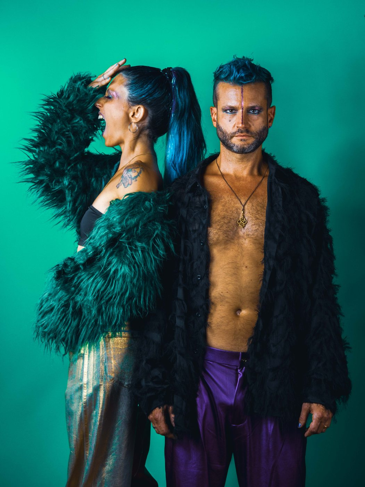
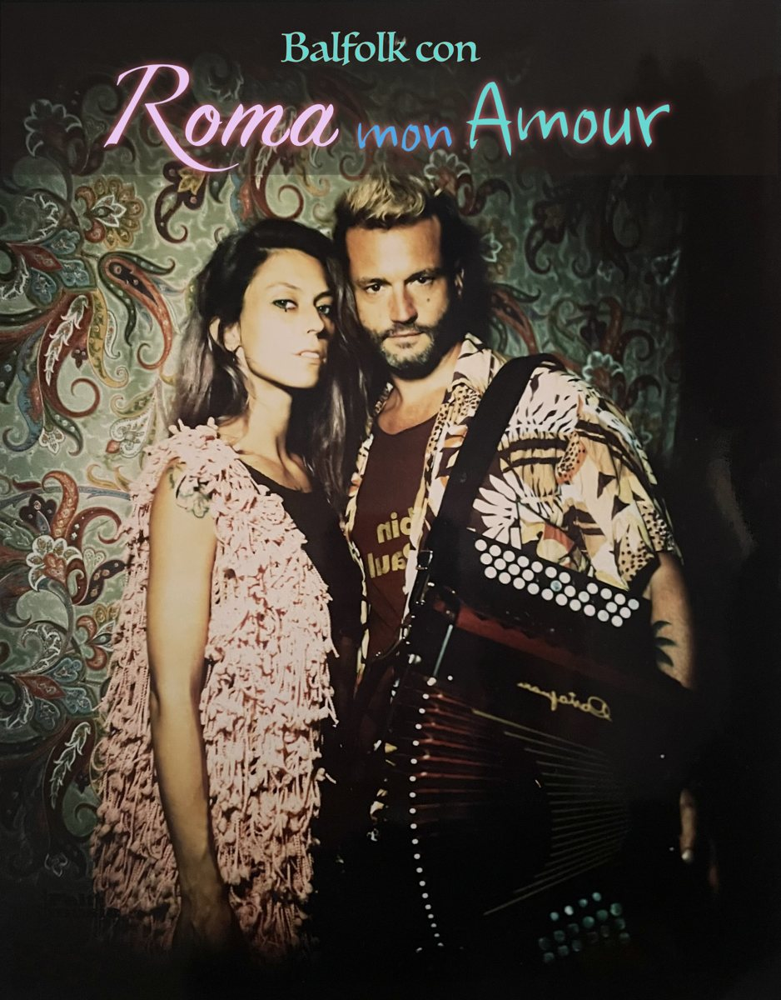

ProjectsProgetti
The four projects I play with. Click one to see music, videos and dates.I quattro progetti con cui suono. Clicca per vedere musica, video e date.

Archaic Future
Ancestral roots meet electronic music: frame drums, strings and accordion over beats and synths.Le radici antiche incontrano l'elettronica: tamburi a cornice, corde e organetto su beat e sintetizzatori.
Discover →Scopri →
Cirque de Loin
Music and live performance for the Swiss company: Smash, Sing! Sissy! Sing!, L'homme n'existe pas, Soror.Musica e scena per la compagnia svizzera: Smash, Sing! Sissy! Sing!, L'homme n'existe pas, Soror.
Discover →Scopri →
KarmaStation
Electronic duo between drum and bass, techno and dub, with lyrics that mean something.Duo elettronico tra drum and bass, techno e dub, con testi che dicono qualcosa.
Discover →Scopri →
Roma mon amour
A dance concert for the balfolk scene, with Fabiana Carosi: mazurkas, waltzes, drum and voice.Un concerto da ballare per la scena balfolk, con Fabiana Carosi: mazurke, valzer, tamburo e voce.
Discover →Scopri →